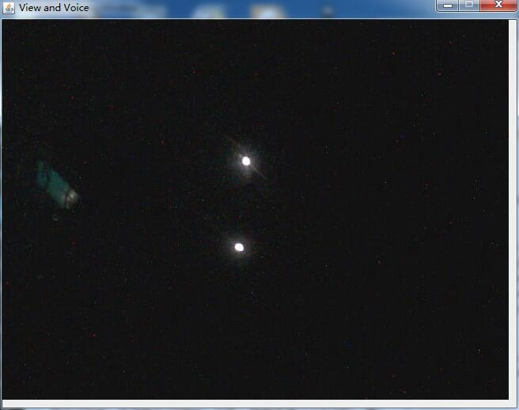
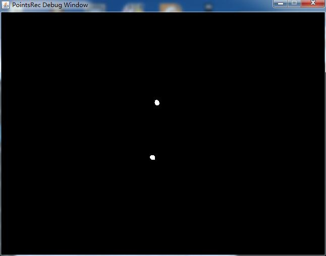

已经有了红外标签，那么接下来就需要实现摄像头端的识别算法。
===============阶段一：识别帧中的红外LED==============
首先需要在摄像头镜头前放置一块红外滤波片，这样，摄像头就只能拍摄到红外线，而其他波段的光都会被过滤掉。这时，用摄像头获取一帧，会发现除了红外LED非常亮之外，比较亮的可见光部分还是有一部分透过了滤波片：
这时因为滤波片并不能保证100%地过滤可见光。不过红外LED的亮度和可见光部分的亮度以及很悬殊了，接下来完全可以用软件滤波啦~软件滤波的原理就是先把每一个像素点的RGB值转换成YCrCb值，不过我们这里只需要求Y值就行了，因为Y值表示亮度。公式为：
Y=0.2568*R+0.504*G+0.1237*B+16
算出的Y也是介于0~255之间。Y越大说明亮度越大。那么接下来，根据一个预先设定好的阈值，比如150，对每个像素点过滤——Y值大于150，则认为该像素点属于红外LED，标记为true，否则标记为false。这样，就能获得一个w*h的二维boolean数组。把该矩阵可视化一下，就是这样的（true的位置用白色表示，false的位置用黑色表示）：

对于人眼来说，已经完全够了，但是对于计算机来说，这样的二维布尔矩阵还无法识别，因为同一个LED产生的亮斑，会产生好多的true（白色像素点）。所以我们需要一个算法，能够把属于同一个LED亮斑的true归结在一起，产生一个数学意义上的点，也就是一个具体的坐标。
要得到一个具体的坐标，就需要得知哪些true（白色像素点）是属于同一个LED的，然后对这些白色像素点的坐标求均值（质心）即可。所以难点就是怎么找出属于同一个LED的所有白色像素点。
你想到聚类算法？把相近的点聚集为一个类？我想说，想法很自然，但是我觉得你一定是复习《数据挖掘》傻了吧？每张图640*480，一秒若干帧，聚类算法太慢了。
寻找亮点的算法其实并不复杂，可以想象一下画图板中的“填充”功能是怎么使用？比如想把上图中的白色亮斑涂成红色，那么是不是只需要随便找一个白色的像素点，然后点击一下鼠标，“红色颜料”就会自动“蔓延”来开呢？这其实也可以看做一种聚类算法，只不过利用了“属于同一个LED的白色像素点都是连通”这个性质。
好了，直接给出这一部分的代码：
PointsRec.java：
package zjs.irrec;
import java.awt.Dimension;
import java.awt.Graphics;
import java.awt.Point;
import java.awt.image.BufferedImage;
import java.util.ArrayList;
import java.util.Collections;
import java.util.List;
import javax.swing.JFrame;
import javax.swing.JPanel;
public class PointsRec
{
//图像宽度和高度
private int width,height;
//最小亮度阈值
private int minLigthness;
//亮斑最小尺寸和最大尺寸
private int minSize,maxSize;
//rgb原始数据
private int[] rgbBuffer;
//二维boolean矩阵，表示较亮的像素
private boolean[][] map;
//队列，属于同一个亮斑的像素点，第i个像素点的x,y分别是pixelCluster[i][0]和pixelCluster[i][1]
private int[][] pixelCluster;
//队列长度
private int pixelClusterLen;
//队列，已经找到的逻辑坐标点（一个LED对应一个Point）
private List<Point> points;
//调试窗口（用来查看中间结果）
private RecDebugPanel debugPanel;
//调试窗口中显示的画面
private BufferedImage debugImage;
public PointsRec(int width,int height,int minLigthness,int minSize,int maxSize,boolean debug)
{
this.width=width;
this.height=height;
this.minLigthness=minLigthness;
this.minSize=minSize;
this.maxSize=maxSize;
rgbBuffer=new int[width*height];
map=new boolean[height][width];
pixelCluster=new int[width*height][2];
pixelClusterLen=0;
points=new ArrayList<Point>();
if(debug)
{
debugPanel=new RecDebugPanel(width,height);
debugImage=new BufferedImage(width,height,BufferedImage.TYPE_3BYTE_BGR);
JFrame debugWindow=new JFrame("PointsRec Debug Window");
debugWindow.add(debugPanel);
debugWindow.setResizable(false);
debugWindow.setDefaultCloseOperation(JFrame.DISPOSE_ON_CLOSE);
debugWindow.pack();
debugWindow.setVisible(true);
}
}
//对外接口，获取帧中的逻辑亮点坐标
public List<Point> getPoints(BufferedImage image)
{
int width=image.getWidth();
int height=image.getHeight();
if(width!=this.width||height!=this.height)
throw new IllegalArgumentException();
//获取原始rgb
image.getRGB(0,0,width,height,rgbBuffer,0,width);
//扫描所有点
for(int y=0;y<height;y++)
{
for(int x=0;x<width;x++)
{
//分离RGB
int rgb=rgbBuffer[y*width+x];
int red=(rgb>>16)&0xff;
int green=(rgb>>8)&0xff;
int blue=rgb&0xff;
//计算亮度
int ligthness=(int)(0.2568*red+0.504*green+0.1237*blue+16);
//标记
map[y][x]=ligthness>=minLigthness;
}
}
//如果需要调试则绘制调试画面
if(debugPanel!=null)
{
for(int y=0;y<height;y++)
for(int x=0;x<width;x++)
debugImage.setRGB(x,y,map[y][x]?0xffffff:0);
debugPanel.setImage(debugImage);
}
//寻找所有逻辑亮点
points.clear();
for(int y=0;y<height;y++)
{
for(int x=0;x<width;x++)
{
//找到一个白色像素点
if(map[y][x])
{
//获取这个白色像素点隶属的LED的逻辑坐标点
Point point=getPoint(x,y,minSize,maxSize);
if(point!=null)
points.add(point);
}
}
}
return Collections.unmodifiableList(points);
}
//获取指定白色像素点隶属的LED的逻辑坐标点
private Point getPoint(int x,int y,int minSize,int maxSize)
{
//清空像素点队列
pixelClusterLen=0;
//使用“填充”算法找到同一个LED产生的所有白色像素点，放入队列
getPixelClutster(x,y,maxSize*maxSize);
//计算尺寸
int minX=width,maxX=0;
int minY=height,maxY=0;
for(int i=0;i<pixelClusterLen;i++)
{
minX=Math.min(minX,pixelCluster[i][0]);
maxX=Math.max(maxX,pixelCluster[i][0]);
minY=Math.min(minY,pixelCluster[i][1]);
maxY=Math.max(maxY,pixelCluster[i][1]);
}
int sizeX=maxX-minX;
int sizeY=maxY-minY;
//过大或过小的则丢弃
if(sizeX<minSize||sizeX>maxSize||sizeY<minSize||sizeY>maxSize)
return null;
//计算质心
int pointX=0;
int pointY=0;
for(int i=0;i<pixelClusterLen;i++)
{
pointX+=pixelCluster[i][0];
pointY+=pixelCluster[i][1];
}
pointX/=pixelClusterLen;
pointY/=pixelClusterLen;
return new Point(pointX,pointY);
}
//使用“填充”算法从某一点“蔓延”开来，找到属于同一个亮斑的所有白色像素点
private void getPixelClutster(int x,int y,int maxPixelCount)
{
//递归停止条件
if(x<0||x>=width||y<0||y>=height||!map[y][x]||pixelClusterLen>=maxPixelCount)
return;
//加入队列
pixelCluster[pixelClusterLen][0]=x;
pixelCluster[pixelClusterLen][1]=y;
pixelClusterLen++;
//标记为已访问，避免多次访问
map[y][x]=false;
//依次递归上、下、左、右
getPixelClutster(x,y-1,maxPixelCount);
getPixelClutster(x,y+1,maxPixelCount);
getPixelClutster(x-1,y,maxPixelCount);
getPixelClutster(x+1,y,maxPixelCount);
}
}
class RecDebugPanel extends JPanel
{
private static final long serialVersionUID=1L;
private int width,height;
private BufferedImage image;
public RecDebugPanel(int width,int height)
{
this.width=width;
this.height=height;
setPreferredSize(new Dimension(width,height));
}
public void setImage(BufferedImage image)
{
this.image=image;
super.repaint();
}
@Override
public void paint(Graphics g)
{
if(image!=null)
g.drawImage(image,0,0,width,height,null);
}
}
用Webcam获取一帧，然后丢给getPoints()方法，就能获取帧中所有亮着的红外LED的坐标了。
=================阶段二：追踪LED亮点===============
现在已经能够识别一帧中的所有红外LED了，那么接下来就需要能够根据若干帧的情况，把每一个LED表达的数字解码出来。这里有两个难点。其一，人戴着这个眼镜可能会晃动，导致同一个LED在前后两帧中位置不同；其二，解码是一个比较被动的事情，算法会复杂一些。好在对于我而言，都不是太难^_^
我定义了一个辅助类TracingPoint，用来表示一个正在追踪的LED，把应对晃动和解码的工作都封装在这个辅助类中。算法维护了一个TracingPoint的集合Ts，表示当前同时在追踪的多个LED。
TracingPoint提供了两个关键方法：
public void onLightOn(int x,int y,long time) public void onLightOff(long time)
onLightOn()不仅告知该TracingPoint当前你是亮的，而且还告知了新的坐标。而onLightOff()仅仅告知该TracingPoint当前你是灭的（因为灭的状态下并不知道该亮点最新坐标）。
每一帧都会分析出若干个LED坐标点。在“追踪”这一步，算法会对当前帧中每一个LED坐标点P，寻找Ts中与它相近的TracingPoint。所谓“相近”，就是他们的距离小于某个阈值，比如50像素。如果能够为P找到相近的TracingPoint，说明TracingPoint在最新帧中的坐标是P，那么就调用TracingPoint的onLightOn()方法，表示用P的坐标更新TracingPoint的坐标，并告知该TracingPoint，当前你是亮着的。如果P找不到“相近”的TracingPoint，则意味着P是一个新的亮点，那么就新建一个TracingPoint，坐标为P的坐标。遍历完所有P后，那么对所有没有配对的TracingPoint调用onLightOff()方法，告知其当前是灭的。
解码的工作就是TracingPoint通过分析调用onLightOn()和onLightOff()的时机来完成的。
PointsTrac.java：
package zjs.irrec;
import java.awt.Point;
import java.util.ArrayList;
import java.util.Collections;
import java.util.LinkedList;
import java.util.List;
import zjs.irrec.util.IrTag;
public class PointsTrac
{
//同一个LED在两帧之间移动的最大距离
private int maxDistance;
//0的最大跳变间隔，1的最大跳变间隔，RST的最大跳变间隔
private long interval0,interval1,intervalRST;
//一个数字占用的位
private int bitCount;
//是否带有反码校验
private boolean check;
//当前正在追踪的点
private List<TracingPoint> tracingPoints;
//此次迭代未被更新（配对）的追踪点
private List<TracingPoint> unrefreshPoints;
//已经解码出来的红外标签
private List<IrTag> irTags;
public PointsTrac(int maxDistance,long interval0,long interval1,long intervalRST,int bitCount,boolean check)
{
if(!(interval0<interval1&&interval1<intervalRST))
throw new IllegalArgumentException();
this.maxDistance=maxDistance;
this.interval0=interval0;
this.interval1=interval1;
this.intervalRST=intervalRST;
this.bitCount=bitCount;
this.check=check;
tracingPoints=new LinkedList<TracingPoint>();
unrefreshPoints=new LinkedList<TracingPoint>();
irTags=new ArrayList<IrTag>();
}
//对外接口，传入帧中的LED左边点和拍摄时间，获取已解码出来的红外标签
public List<IrTag> getIrTags(long time,List<Point> points)
{
//先认为所有追踪点都不会被更新（配对）
unrefreshPoints.clear();
unrefreshPoints.addAll(tracingPoints);
//遍历所有LED坐标点
for(Point point:points)
{
//寻找相近的追踪点
boolean isFound=false;
for(TracingPoint tracingPoint:tracingPoints)
{
//找到
if(tracingPoint.isNear(point.x,point.y))
{
//更新追踪点
tracingPoint.onLightOn(point.x,point.y,time);
unrefreshPoints.remove(tracingPoint);
isFound=true;
break;
}
}
//找不到则新建追踪点
if(!isFound)
tracingPoints.add(new TracingPoint(point.x,point.y,time));
}
//遍历所有未更新（配对）的追踪点
for(TracingPoint unrefreshPoint:unrefreshPoints)
{
//如果已经长时间没有被更新，那么丢弃
if(time-unrefreshPoint.getLastTriggerTime()>intervalRST)
tracingPoints.remove(unrefreshPoint);
//否则告知其当前为灭
else
unrefreshPoint.onLightOff(time);
}
//扫描所有已经解码完成的追踪点（变成红外标签）
irTags.clear();
for(TracingPoint tracingPoint:tracingPoints)
{
//已经得到了解码完成后的数字
Integer code=tracingPoint.getCode();
if(code!=null)
{
irTags.add(new IrTag(tracingPoint.getX(),tracingPoint.getY(),code));
tracingPoint.reset();
}
}
return Collections.unmodifiableList(irTags);
}
class TracingPoint
{
//最新坐标
private int x,y;
//上一次跳变后的状态（true为亮，false为灭）
private boolean lastState;
//上一次跳变的时间
private long lastTriggerTime;
//已经收到的位
private long bits;
//已经收到的位数
private int bitCount;
public TracingPoint(int x,int y,long time)
{
this.x=x;
this.y=y;
lastState=true;
lastTriggerTime=time;
bits=0;
bitCount=0;
}
public int getX()
{
return x;
}
public int getY()
{
return y;
}
public long getLastTriggerTime()
{
return lastTriggerTime;
}
//获取已经解码完成的数字
public Integer getCode()
{
//如果不带有反码校验
if(!check)
{
//接收的位数不对
if(bitCount!=PointsTrac.this.bitCount)
return null;
//正确解码则返回数字
long mask=(1<<bitCount)-1;
return (int)(bits&mask);
}
//如果带有反码校验
else
{
//接收的位数不对（bitCount位数据和bitCount+1位反码）
if(bitCount!=2*PointsTrac.this.bitCount)
return null;
long mask=(1<<PointsTrac.this.bitCount)-1;
//数据本身是高bitCount位
int value=(int)((bits>>PointsTrac.this.bitCount)&mask);
//反码是低bitCount位
int reverse=(int)(bits&mask);
//刚好是反码则认为接收正确
if(value==((~reverse)&mask))
return value;
return null;
}
}
public boolean isNear(int x,int y)
{
int deltaX=x-this.x;
int deltaY=y-this.y;
int distance=(int)Math.sqrt(deltaX*deltaX+deltaY*deltaY);
return distance<maxDistance;
}
public void reset()
{
bitCount=0;
}
public void onLightOn(int x,int y,long time)
{
//更新坐标
this.x=x;
this.y=y;
//如果之前状态是灭，则触发一次跳变处理
if(!lastState)
onTrigger(time);
}
public void onLightOff(long time)
{
//如果之前状态是亮，则触发一次跳变处理
if(lastState)
onTrigger(time);
}
//跳变处理
private void onTrigger(long time)
{
//计算与上次跳变的时间差
long deltaTime=time-lastTriggerTime;
//接收到0
if(deltaTime<interval0)
{
bits<<=1;
bitCount++;
}
//接收到1
else if(deltaTime<interval1)
{
bits<<=1;
bits|=1;
bitCount++;
}
//接收到RST
else if(deltaTime<intervalRST)
bitCount=0;
//总共需要接收的位数
int totalBitCountNeeded=check?PointsTrac.this.bitCount*2:PointsTrac.this.bitCount;
//收的过多了肯定有问题
if(bitCount>totalBitCountNeeded)
bitCount=0;
lastState=!lastState;
lastTriggerTime=time;
}
}
}
其中涉及到的IrTag其实就是一个很简单的POJO。
IrTag.java：
package zjs.irrec.util;
public class IrTag
{
private int x,y;
private int code;
public IrTag(int x,int y,int code)
{
this.x=x;
this.y=y;
this.code=code;
}
public int getX()
{
return x;
}
public int getY()
{
return y;
}
public int getCode()
{
return code;
}
@Override
public String toString()
{
return String.format("(%d,%d)=%d",x,y,code);
}
}